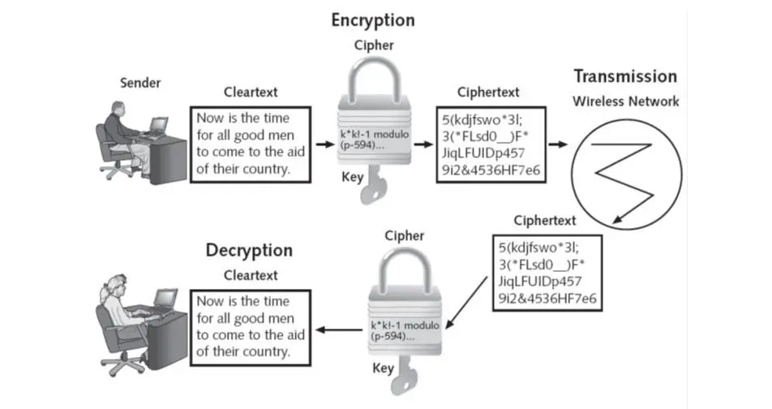

WT
IEEE 802.11 vs 802.16
| Category | 802.11 | 802.16 |
|---|---|---|
| Define | WLAN | WiMAX |
| Designed | Limited area | Distance area |
| Range | 30m to 100m | 7km to 50km |
| Usage | Indoor | Outdoor |
| Frequencies | 2.5GHz, 3.5GHz & 5.8GHz | 2.4GHz & 5GHz |
| Channel | 20MHz | 20MHz |
| Variants | 802.11a, 802.11b, 802.11c & etc | 802.16a, 802.16b, 802.16c & etc |
| User Size | Large | Limited |
| Encryption | AES(Advance Encription Standard) | Rivest Cipher 4 |
| Bandwidth | 1.5 to 28 MHz | 20 MHz, 40 MHz, 80 MHz and 160 MHz |
Bluetooth
Architecture

- Piconet: A piconet is a network formed by one master unit and up to seven active slave units. The master unit controls the communication within the piconet, managing the timing and frequency hopping for synchronized data transfer between devices.
- Master Unit: The master unit in Bluetooth architecture is the device that initiates connections and controls the communication with one or more slave units. It manages the timing and frequency hopping in the network.
- Slave Unit: A slave unit is a device that connects to a master unit in a Bluetooth network. Within the slave unit category, there are different types:
- Parked Slave: A parked slave is a device that is synchronized with the piconet but is not actively participating in data transfer. It remains in a low-power state until needed.
- Active Slave: An active slave is a device actively involved in data transfer within the piconet.
- Bridge Slave: A bridge slave is a device that can connect two piconets together, acting as a bridge between them.
- Standby Unit: A standby unit is a device that is synchronized with a piconet but is not actively participating in data transfer. It remains in a low-power state, ready to become active when needed.
- Scatternet: A scatternet is a network where multiple independent piconets are interconnected through shared devices, allowing communication between devices in different piconets.
Protocol stack

Radio: It provides the electrical interface for transfer of packets. It uses modulated carrier for this purpose.
| Protocol layer | Protocols in the stack |
|---|---|
| Bluetooth Core Protocols | Baseband, LMP, L2CAP, SDP |
| Cable Replacement Protocol | RFCOMM |
| Telephony Control Protocols | TCS Binary, AT-commands |
| Adopted Protocols | PPP, UDP/TCP/IP, OBEX, WAP, vCard, vCal, IrMC1, WAE |
- Bluetooth Core Protocols: The core protocols of Bluetooth form the foundation of the Bluetooth technology, providing essential functions for communication between devices.
- Baseband: This layer is responsible for addressing scheme, packet frame format, timing and power control algorithms required for establishing connection between Bluetooth devices within a piconet.
- Audio: Audio data can be transferred between one or more Bluetooth devices.
- Link Manager Protocol (LMP):

- This layer is responsible for establishing and maintaining links between Bluetooth devices.
- It includes authentication and encryption specifications, and handles negotiation of packet sizes between devices.
- Logical Link Control and Adaptation Protocol (L2CAP): This layer adapts upper layer frames to baseband layer frame format and vice versa. It provides both connection-oriented and connectionless services.
- Service Discovery Protocol (SDP): It enables a Bluetooth device to join piconet. Allows devices to discover services offered by other devices, facilitating the establishment of connections.
- Cable Replacement Protocol: providing a means for devices to communicate as if connected by a physical cable.
- Radio Frequency Communication (RFCOMM): It is a serial communication protocol.
- Telephony Control Protocols: are responsible for call control signaling, mobility management, and controlling mobile phones.
- Telephony Control – Binary (TCS BIN): a bit-oriented protocol that defines call control signaling for establishing voice and data calls between Bluetooth devices.
- Telephony Control – AT Commands:


- are a set of instructions and control functions used for telephony control between Bluetooth devices.
- Adopted Protocols: standard protocols integrated into Bluetooth technology to enhance its functionality
- Point to Point Protocol (PPP):

- a data link layer communication protocol between two routers directly without any host or any other networking in between
- Object Exchange Protocol (OBEX Protocol):
- It allows for the seamless transfer of various types of data, such as files, contacts, and messages, between Bluetooth-enabled devices, enhancing the interoperability and usability of Bluetooth technology.
- Transmission Control Protocol / User Datagram Protocol / Internet Protocol (TCP/UDP/IP):

- The implementation of these standards in Bluetooth devices allows for communication with any other device connected to the Internet: The Bluetooth device.
- Point to Point Protocol (PPP):
Explain features of MANET, WANET, E-WANET, WiMAX
MANET

A wireless ad hoc network or mobile ad hoc network is a decentralized type of wireless network. The network is ad hoc because it does not rely on a pre-existing infrastructure, such as routers or wireless access points. Instead, each node participates in routing by forwarding data for other nodes.
The features of a Mobile Ad-hoc Network (MANET) are:
- Peer to Peer connectivity: have peer to peer connectivity among themselves.
- Decentralized: There is no centralized infrastructure in a MANET, and each node acts as a router, forwarding traffic to other nodes in the network.
- Self-configuring and self-healing: MANETs can automatically configure themselves and heal from disruptions without human intervention.
- Multihop: MANETs typically have a multihop network topology, where data is transmitted through multiple nodes to reach its destination.
- No access point requiered: Only selected access point are required.
- Diversity: nodes can be smartphones, computers, laptops etc.
WANET

Wireless Ad Hoc Networks (WANETs) are a type of decentralized wireless network that connects several devices wirelessly without the need for a centralized access point or router.
They offer several features, including:
- Decentralized: Each device in a WANET acts as an independent router, establishing connections with other nodes in the network.
- Self-configuring: WANETs can dynamically change their links with other devices in the network.
- Low power consumption: WANETs require low power consumption, making them suitable for use in remote areas or in emergency response scenarios.
- No fixed infrastructure: WANETs do not require fixed infrastructures to work, allowing for rapid deployment and expansion of network operations.
- Direct peer-to-peer wireless connection: WANETs access resources directly through peer-to-peer wireless connections, eliminating the need for central servers.
- Types of WANETs:
- MANETs (Mobile Ad Hoc Networks)
- IMANETs (Internet-based Mobile Ad Hoc Networks)
- SPANs (Smartphone Ad Hoc Networks)
- VANETs (Vehicular Ad Hoc Networks)
- Army Tactical MANETs.
- Applications:
- Emergency response operations
- Military surveillance missions
- Communication
- Entertainment purposes
- Medical applications and etc.
E-WANET
E-WANET, or Energy-aware Wireless Ad-Hoc Network, is a type of wireless network that prioritizes energy efficiency and energy awareness.
Here are the features of E-WANET:
- Energy efficiency: E-WANET is designed to minimize energy consumption and prolong the battery life of wireless devices. It achieves this by employing energy-efficient protocols and algorithms that reduce the power consumption of wireless devices5.
- Energy aware: E-WANET is aware of the energy status of each device in the network. It uses this information to make routing decisions that minimize energy consumption and prolong the battery life of devices5.
- Low power hardware: E-WANET is designed to work with low power hardware, such as wireless sensors and mobile devices. This allows E-WANET to be used in remote and resource-constrained environments where access to power is limited5.
- Quality of service (QoS) support: E-WANET supports QoS by providing different levels of service to different applications. This ensures that critical applications, such as emergency response and medical applications, receive the necessary resources and priority in the network5.
WiMAX

WiMAX, which stands for Worldwide Interoperability for Microwave Access, is a wireless broadband technology that offers a range of features that make it a versatile and efficient communication solution. Here are the key features of WiMAX based on the provided sources:
- Broad Coverage: WiMAX provides wide area coverage, allowing users to access the Internet wirelessly over long distances, with towers capable of broadcasting signals that can cover up to 50 km.
- High Speed: WiMAX offers high-speed data transmission, comparable to 802.11/Wi-Fi networks, with the ability to deliver performance similar to cellular networks. It supports very high peak data rates, with peak PHY data rates reaching up to 74Mbps using a 20MHz wide spectrum.
- Scalability: WiMAX features a scalable physical-layer architecture that allows for the data rate to scale easily with the available channel bandwidth.
- Backwards Compatibility: WiMAX is designed to be backwards compatible, enabling interoperability with existing wireless technologies. This compatibility allows for a smooth transition to WiMAX technology without the need for a complete overhaul of existing infrastructure.
4G Network Architecture

The LTE network architecture comprises of following three main components.
- User Equipement(UE): - This represents your mobile phone or any other device that connects to the 4G network. It communicates with the network via radio signals.
- The Mobile Equipment comprised of the following important modules:
- Mobile Termination (MT) : This handles all the communication functions.
- Terminal Equipment (TE) : This terminates the data streams.
- The Mobile Equipment comprised of the following important modules:
- Evolved UMTS Terrestrial Radio Access Network: This refers to the radio access network part of the 4G system. E-UTRAN consists of cell towers, also known as eNodeB (eNB) in the diagram, that transmit and receive radio signals to and from user devices.
- The Evolved Packet Core (EPC): This is the heart of the 4G network, and it's responsible for handling all the data traffic that flows between the user equipment and the external networks like the internet.
- PDNs (Packet Data Networks): These represent external networks that the user equipment can access through the 4G network, such as the internet.

MANET vs WSN
| Category | MANET | WSN |
|---|---|---|
| Full Form | Mobile Ad-hoc Networks | Wireless Sensor Network |
| Used for | Wireless ad-hoc in radio waves | Wireless sensor network in radio waves, infrared and optical media |
| Routing | Hop-to-Hop | Query-based / Data Centric Routing & Location Based |
| Type | Heterogeneous | Homogeneous |
| Traffic Pattern | Point-to-Point | Any-to-Any, Many-to-One, Many-to-Few and One-to-Many |
| Data rate | High | Low |
| Support | Common Services | Specific Applications |
| Node devices | Any | Limited |
| Network type | Peer-to-Peer | Hierarchical or Mesh |
Layer Architecture of WSN

A Wireless Sensor Network (WSN) is a distributed network comprising a large number of spatially dispersed, tiny, low-powered devices called sensor nodes that communicate wirelessly to monitor physical or environmental conditions such as temperature, sound, vibration, pressure, motion, or pollutants.

Protocol Layers:
- Physical Layer
- The objective of physical layer is to increase the reliability by reducing path loss effect and shadowing.
- This layer is responsible for established connection, data rate, modulation, data encryption, signal detection, frequency generation and signal detection.
- Data Link Layer
- The objective of Data link layer is to insure interoperability among communication between nodes to nodes. This layer is responsible for error detection, multiplexing. Prevention of Collision of packets, repeated transmission etc.
- Network Layer
- The objective of Network layer is to find best path for efficient routing mechanism.
- This layer is responsible for routing the data from node to node, node to sink, node to base station, node to cluster.
- Transport Layer
- The objective of Transport Layer is to establish communication for external networks i.e. sensor network connected to the internet.
- Application Layer
- The objective of Application Layer is to present final output by ensuring smooth information flow to lower layers.
- This layer is responsible for data collection, management and processing of the data through the application software for getting reliable results.
Cross Layer:
- Power Management: WSNs consist of battery-powered sensors, and power management is crucial to ensure the network can function for long periods without frequent battery replacements.
- Mobility Management: WSNs can include mobile nodes, and mobility management is essential to ensure reliable communication and data transfer between moving nodes.
- Task Management: WSNs can be used for various applications, and task management is necessary to ensure that the network can perform the required tasks efficiently and reliably.
FHSS vs DSSS

These are methods used in wireless communication to spread a signal over a wide range of frequencies.
FHSS involves rapidly changing the frequency of the signal in a pattern known to both sender and receiver, making it resistant to interference and eavesdropping.
On the other hand, DSSS divides the signal into smaller parts and mixes it with redundant data bits, making it more secure and resistant to noise.
| Category | FHSS | DSSS |
|---|---|---|
| Full Form | Frequency Hopping Spread Spectrum | Direct Sequence Spread Spectrum |
| Transmission rate | Low | High |
| Modulation | Multilevel Frequency Shift Keying (FSK) | Binary Phase shift keying |
| Bandwidth utilization | More | Less |
| Used in | Bluetooth, Mobile Communication, etc | GPS, Wifi & etc |
| Interference | Resistant | Vulnerable |
| Efficiency | More | Less |
| Transmission Speed | Up to 3Mbps | up to 11Mbps |
WEP

- Full form Wired Equivalent Privacy
- Since data travels through wireless networks on radio waves, it can be easily intercepted by unauthorized users unless security measures are in place.
- WEP was introduced in 1997 as the first attempt at wireless security.
- The aim was to add security to wireless networks by encrypting data transmission.
- If wireless data were intercepted, it would be unrecognizable to unauthorized users since it has been encrypted.
- However, WEP has several vulnerabilities that make it less secure than WPA or WPA-2.
- This is because some of the algorithms used in WEP encryption are weak and can be broken with relatively little effort.
- Additionally, WEP uses a static key system, which means that the same key is used to encrypt all data on the network. This makes it more vulnerable to hacking than WPA or WPA-2, which use dynamic keys.
WPA-2

- Wi-Fi Protected Access 2 (WPA2) is the second generation of the Wi-Fi Protected Access security standard, designed to provide enhanced security for wireless networks.
- It was introduced in 2004 as an improvement over its predecessor, WPA, to address vulnerabilities and enhance data encryption and user authentication.
- Introduced in 2004, this is the Wi-Fi Alliance's protocol replacing WEP.
- It offers more robust security mechanisms.
- WPA-2 uses two modes:
- Personal: relies on a pre-shared key (PSK) for home users or small offices.
- Enterprise: suited for organizations that require more secure authentication methods.
- Both modes use:
- CCMP (Counter Cipher Mode with Block Chaining Message Authentication Code Protocol): a strong encryption standard.
Cisco UWN

- With thie explosion of wireless technology in the enterprise network designers have to create solution that provide the mobility and security necessary to monitor network security.
- The Cisco Unified Wireless Network architecture tackles these issues by delivering a converged, secured and manageable network.
- Cisco UWN provides management centralization with control in the infrastructure.
- Features:
- Security
- Scalability
- Performance
Outline methods that Support Cisco UWN
- Planning phase
- Define the scope of wireless network deployment
- Identify the requirements and goals of the network
- Design phase
- Select appropriate Cisco wireless access points, controllers, and management tools
- Ensure compatibility with existing infrastructure
- Implementation phase
- Install and configure all wireless access points and controllers according to the design
- Testing & optimization phase
- Conduct walk through to ensure security and coverage meet the requirements
- Optimize performance through testing
AD-HOC network & Infrastructure network

Ad-Hoc Network:
- An ad-hoc network is a decentralized type of wireless network where wireless devices communicate directly with each other without the need for a central access point.
- In an ad-hoc network, nodes are within range of each other and can communicate directly without the requirement of a fixed infrastructure.
- Each node in an ad-hoc network acts as a router, and the network connection is distributed among the nodes.
- Ad-hoc networks are created dynamically by a collaboration of random nodes, making them suitable for quick and temporary network setups.
- This type of network is peer-to-peer, allowing devices to communicate directly with each other without relying on a central access point.
Infrastructure Network:
- An infrastructure network, also known as STA-AP mode, requires all communication to go through an access point (AP) that connects wireless devices (Stations) to a wired network.
- In infrastructure networks, wireless devices communicate with the access point, which then forwards the data to other devices on the network.
- Access points play a key role in connecting wireless devices to the wired network, acting as a bridge between wireless traffic and the wired network.
- Infrastructure networks are more common in companies and organizations, providing a centralized wireless network architecture where devices communicate with the access point rather than directly with each other.
- Wireless routers and access points are commonly used in infrastructure networks to facilitate communication between wireless devices and the wired network infrastructure.